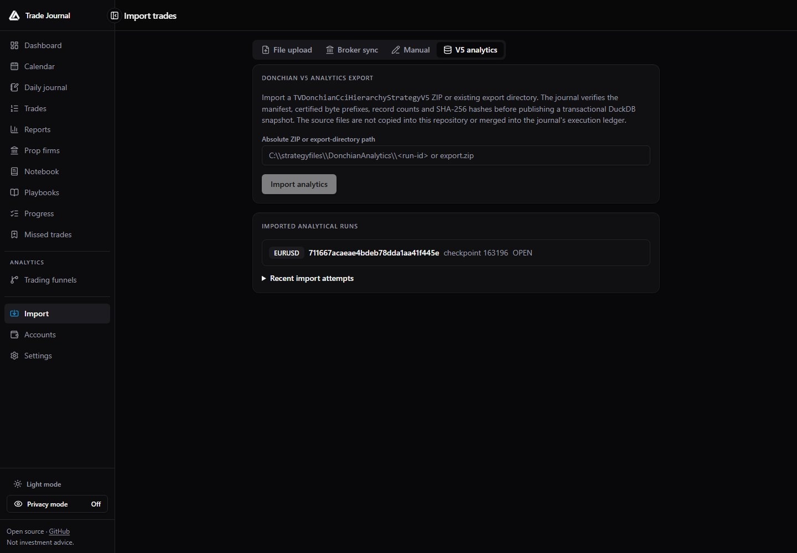
Absolute directory or ZIP path, imported-run registry, checkpoint state and recent attempts.
Certified EURUSD playback · feature inventory · desktop frames

Absolute directory or ZIP path, imported-run registry, checkpoint state and recent attempts.
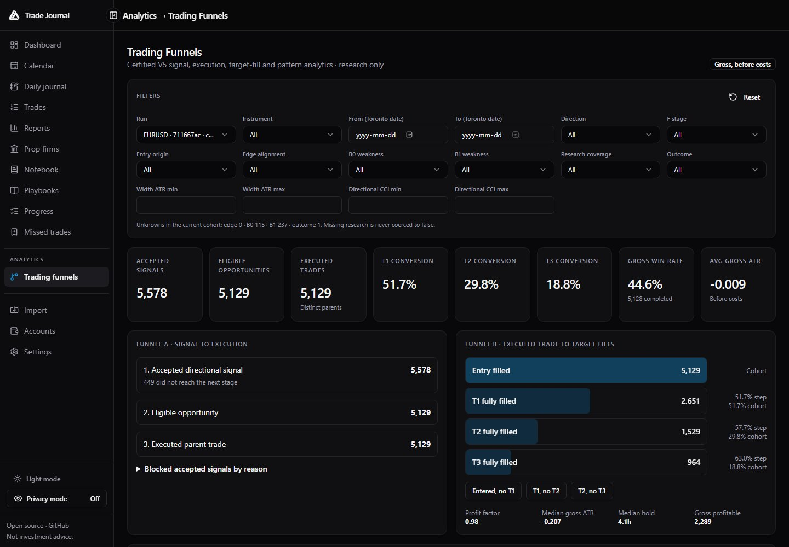
Global filters, KPI strip, signal-to-execution funnel and target-fill funnel.
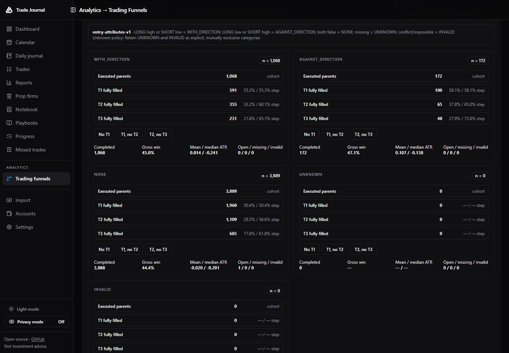
Registry-backed HH7 cohorts with conversion, gross outcome and data-quality measures.
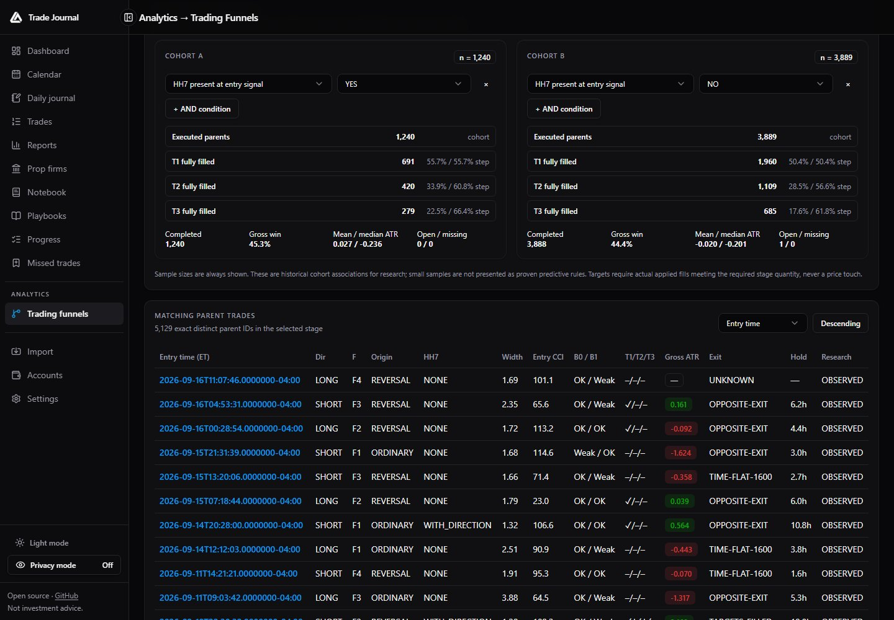
Two independently composed AND cohorts with a reconciled parent table below.
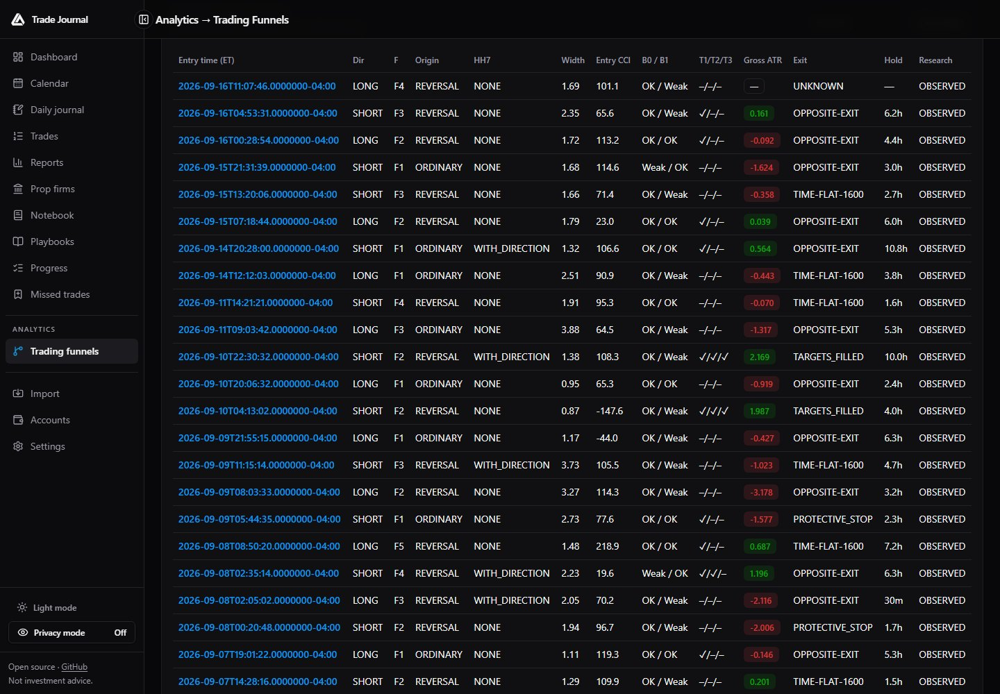
Server-paginated parent IDs, certified stage status, gross ATR, exit class and research coverage.
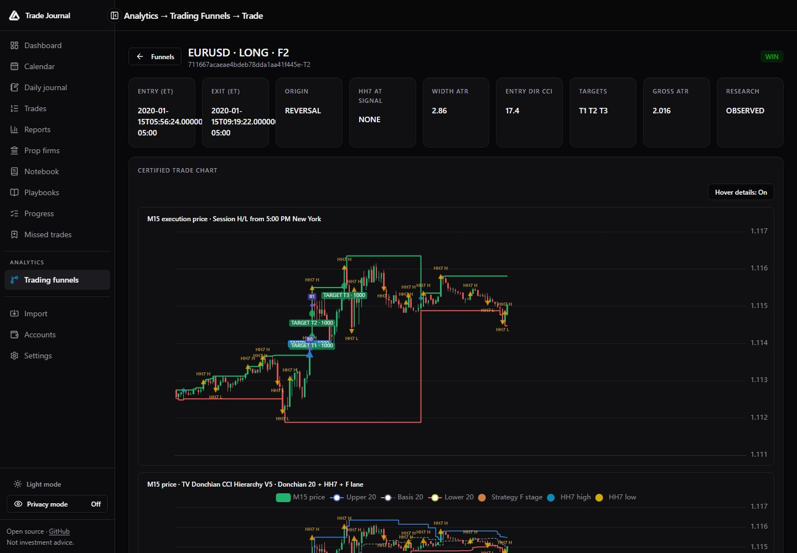
Entry context, target completion, gross ATR and synchronized execution chart.
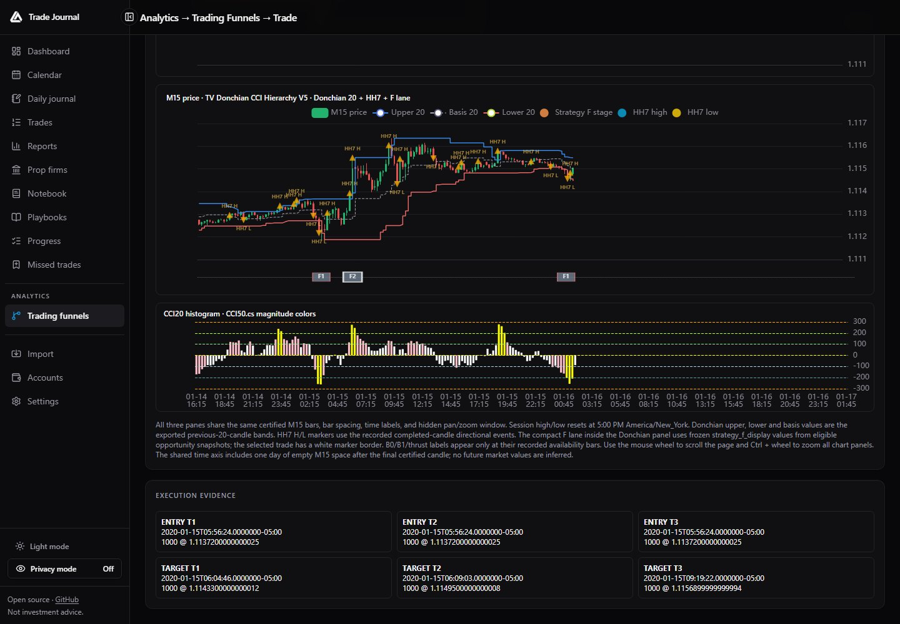
Donchian bands, HH7 markers, F lane, CCI pane and the admitted fill ledger.
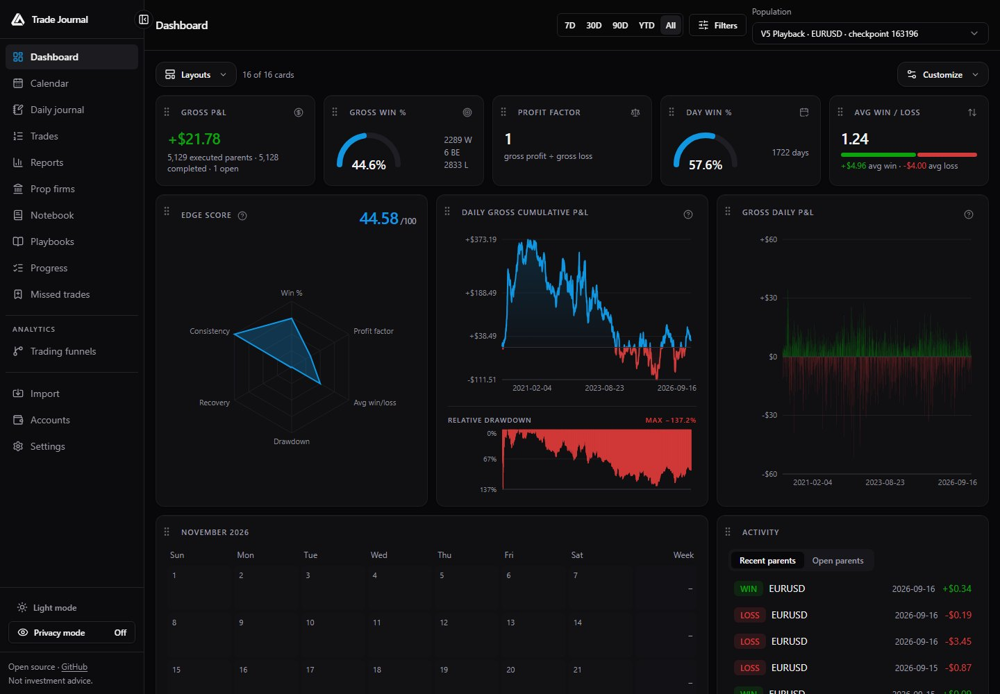
Gross P&L, win rate, Edge Score, equity, daily results, calendar and activity.
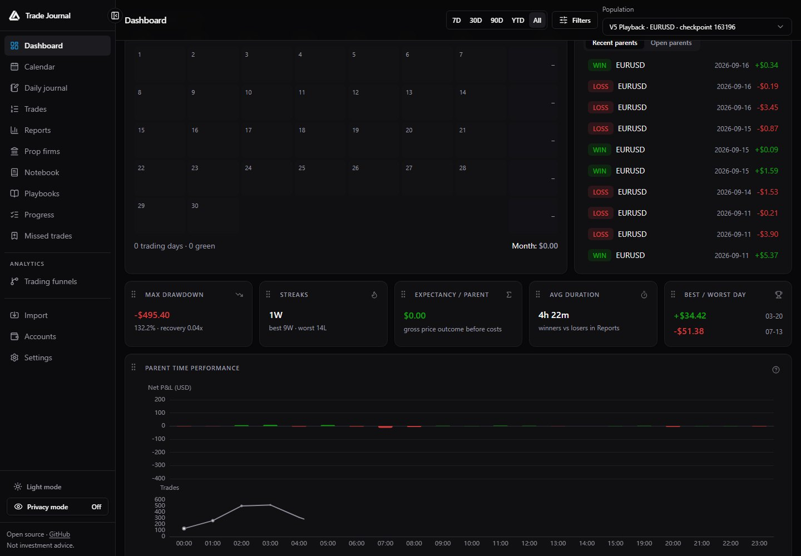
Recent/open parents, drawdown, streaks, expectancy, duration and opening-hour performance.
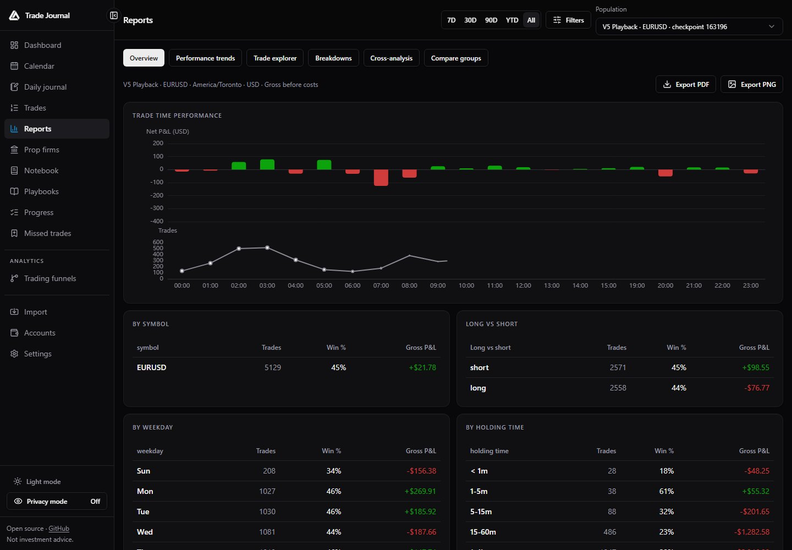
Time performance and core gross-P&L breakdowns with export controls.
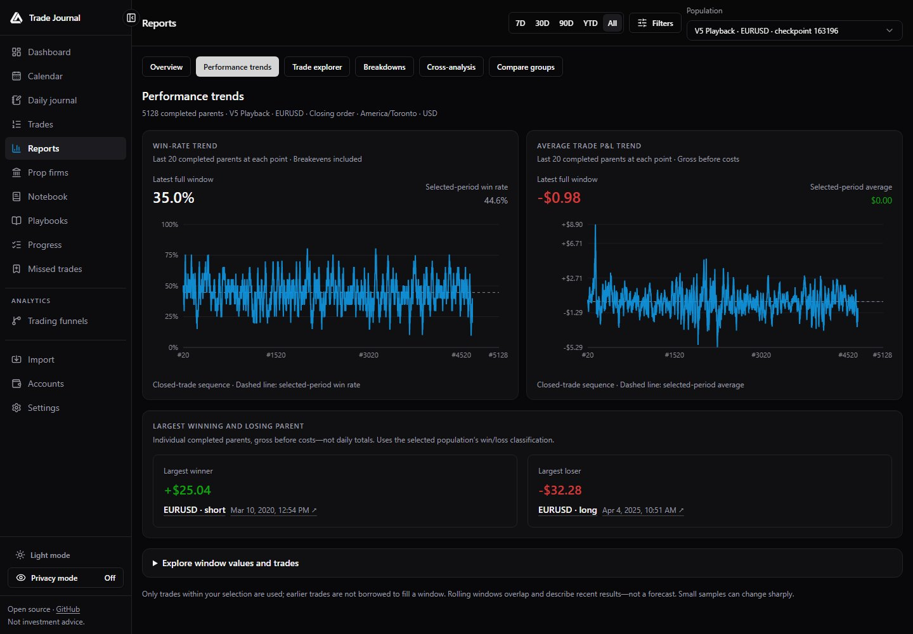
Rolling 20-parent win rate and average gross P&L with largest win/loss.
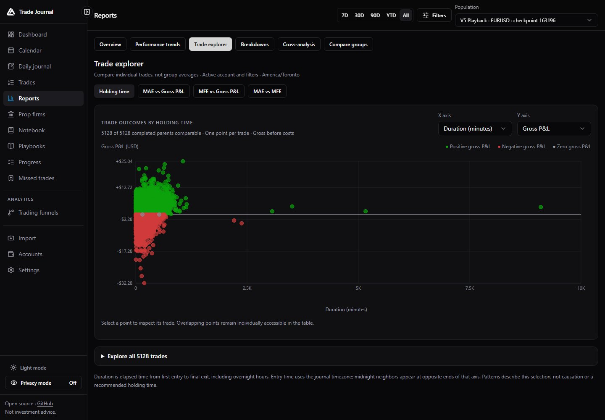
One point per completed parent with selectable duration and gross-P&L axes.
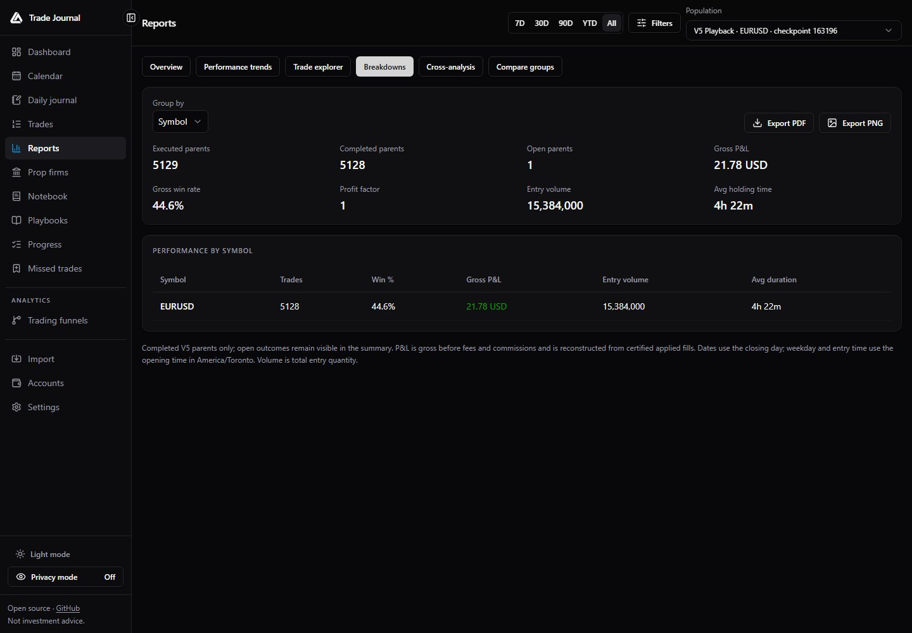
Group by supported dimensions and export the exact table.
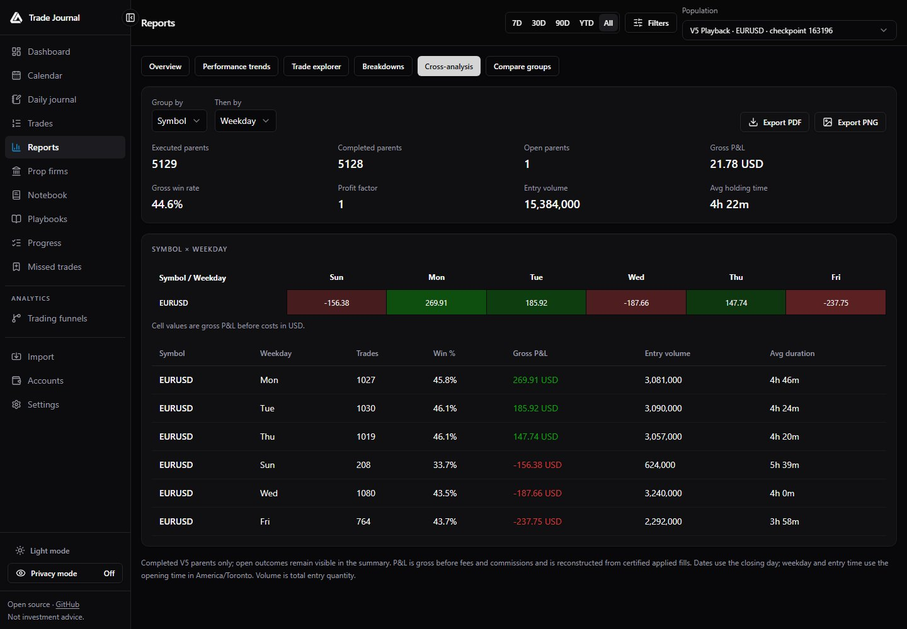
Two-dimensional gross-P&L matrix with an inspectable group table.
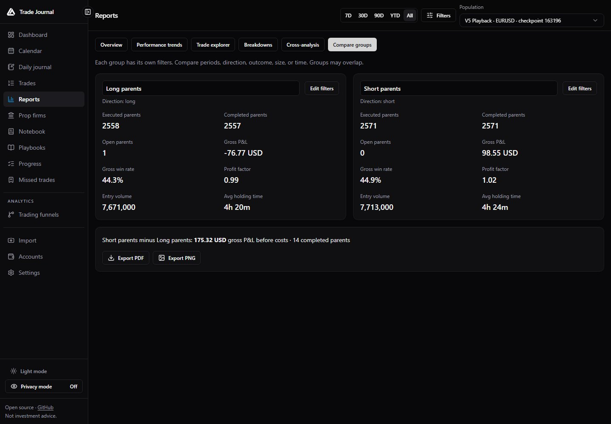
Independent filters, named cohorts and a direct gross-P&L difference.